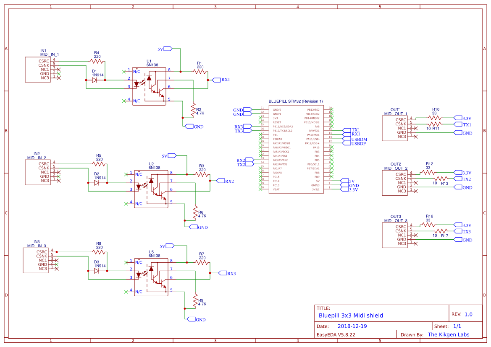

Based on a STMF103 Bluepill I bought 2$, I have designed a board that allows a 3 in / 3 out MIDI USB interface, compatible with the firmware i wrote for the MIDIKLIK 4x4.

All details and features here :
https://github.com/TheKikGen/USBMidiKliK4x4/blob/master/README.md
A multi-port USB MIDI interface for the STM32DUINO platform.
Download the last firmware here : https://github.com/TheKikGen/USBMidiKliK4x4/releases
User manual is here : https://github.com/TheKikGen/USBMidiKliK4x4/wiki/UMK4x4-V2.5-User-Manual
Check also the wiki here : https://github.com/TheKikGen/USBMidiKliK4x4/wiki
The story of this project starts with a hack of the MIDIPLUS/MIDITECH 4x4 USB to MIDI interface. Needing more midi jacks, I bought a second Miditech interface, but I discovered it was not possible to use 2 Miditech / Midiplus MIDI USB 4X4 on the same computer to get 8x8, and according to the Miditech support, as that usb midi interface was not updateable at all ! I was stucked....That was motivating me enough to write a totally new and better firmware : the UsbMidiKlik4x4 project was born.
The current version V2.5 supports full USB midi until 16xIN , 16XOUT plus routing features, enabling configurables standalone mode, merge mode, thru mode, split mode, midi transformation, midi clock, etc., huge sysex flow, configuration menu from serial USB, and is very fast and stable thanks to the STM32F103. More of that, you can aggregate until 5 3x3 boards seen as one by activating the "Bus mode".
USBMidiKliK4x4 detailed features
The "pipeline" feature allows you to modify an incoming midi message through a chain of transformation functions (a "pipe"), e.g., transpose notes, split, map channel to another, map CC to another, etc...New pipes can be easily added in order to obtain complex midi transformations without degrading performances.